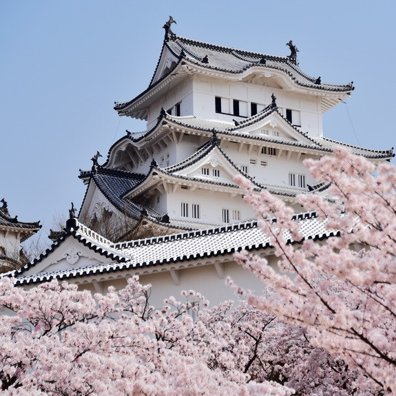

Enjoy a relaxed wandering experience, allowing you to fully immerse yourself in the local
customs.
Flexible schedule that caters to your preferences, letting you follow your heart's desire.
Affordable prices that won't burden your wallet, perfect for those on a moderate budget.
Furthermore, our itineraries provide meticulous route guidance, making it convenient for
travelers to navigate their way.

| Date |
journey |
| July 10th |
Departure! ▶ Osaka, Japan (The Osaka Museum of Housing And Living ▶Osaka
Castle ▶
Tsutenkaku ▶ Kuromon Market ▶ Dotonbori ▶ Shinsaibashi ▶
Tenjinbashisuji Shopping Street ▶ Umeda Sky Building)
|
| July 11st |
Kiyomizu-dera Temple ▶ Nienzaka ▶ Sanzaka ▶ Kiyomizuzaka ▶ Kodaiji
Temple
▶ Yasaka Shrine. |
| July 12nd |
Osaka Station ▶ Universal City Station ▶Universal Studios |
| July 13rd |
Himeji Castle ▶ Akashi Kaikyo Bridge ▶ Maiko Marine Promenade ▶ Sannomiya
Kitano Ijinkan ▶ Port of Kobe |
| July 14th |
back to Taiwan |
Osaka is a vibrant city in Japan known for its blend of modern and traditional attractions. It
boasts stunning architecture, delicious street food, and a rich cultural heritage. With its
bustling
markets, vibrant nightlife, and iconic landmarks like Osaka Castle, it offers a unique and
unforgettable experience for visitors.
KYOTO is a city in Japan known for its rich cultural heritage, ancient temples, and stunning natural
beauty. It serves as a symbolic reminder of traditional Japanese culture, featuring beautiful
gardens, historic landmarks like Kiyomizu-dera, and embracing the essence of tranquility through its
serene atmosphere and traditional tea ceremonies.
July 12nd Universal Studios Japan (USJ)
Universal Studios Japan (USJ) in Osaka, also known as Osaka's Universal Studios, is a popular theme
park that offers a thrilling and immersive entertainment experience. Featuring exciting rides, live
shows, and beloved characters from movies and TV shows, it's a must-visit destination for movie
buffs and amusement park enthusiasts.
 A cosmopolitan but compact port city that boasts some of the country's best beef
Located across the bay from Osaka , Kobe is Japan's sixth largest city and the capital of Hyogo
Prefecture .
Long home to the bulk of Japan's international trade, cosmopolitan Kobe has a unique history and
distinct architecture.
A cosmopolitan but compact port city that boasts some of the country's best beef
Located across the bay from Osaka , Kobe is Japan's sixth largest city and the capital of Hyogo
Prefecture .
Long home to the bulk of Japan's international trade, cosmopolitan Kobe has a unique history and
distinct architecture.